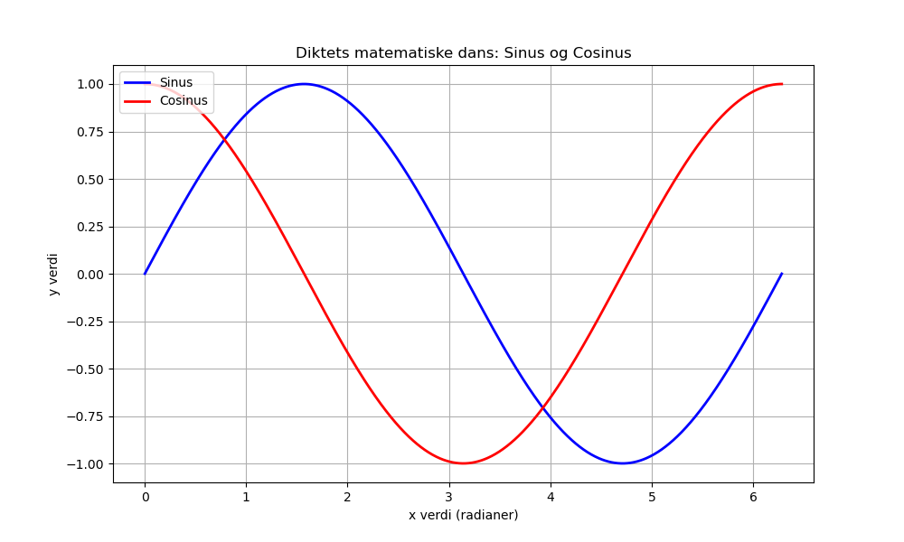

Dagens dikt
I en verden av linjer og tall,
Hvor kurver danser, og punkter fall.
Sinuset hvisker i en harmonisk sang,
Mens cosinus bærer rytmen lang.
Oppover bølgen stiger med prakt,
Nedover dykker den med matematisk makt.
Er det en sirkel der ute et sted?
Eller er det bare orden i kaos bred?

Kode
import numpy as np
import matplotlib.pyplot as plt
# Definer diktets matematiske representasjoner
x = np.linspace(0, 2 * np.pi, 1000)
y_sin = np.sin(x) # Sinus viser den harmoniske sangen
y_cos = np.cos(x) # Cosinus bærer rytmen
# Plotte sinus og cosinus funksjoner
plt.figure(figsize=(10, 6))
plt.plot(x, y_sin, label="Sinus", color="blue", linewidth=2)
plt.plot(x, y_cos, label="Cosinus", color="red", linewidth=2)
# Formelle plotdetaljer
plt.title("Diktets matematiske dans: Sinus og Cosinus")
plt.xlabel("x verdi (radianer)")
plt.ylabel("y verdi")
plt.legend(loc="upper left")
plt.grid(True)
# Vise plottet
plt.savefig('2025-03-20-20-01-25.png')